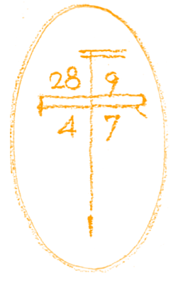
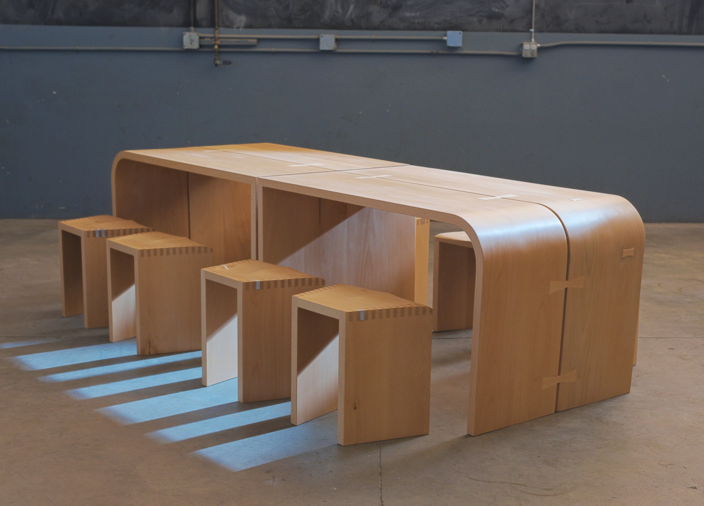
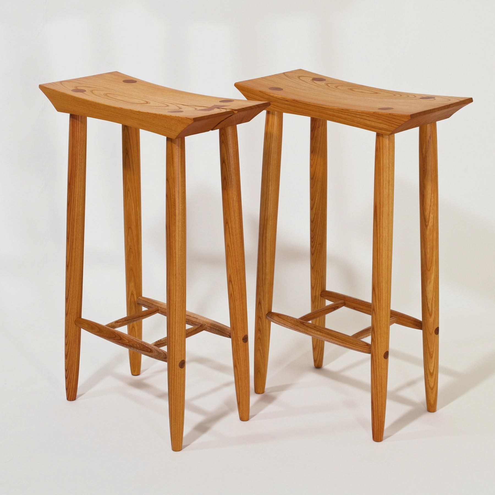
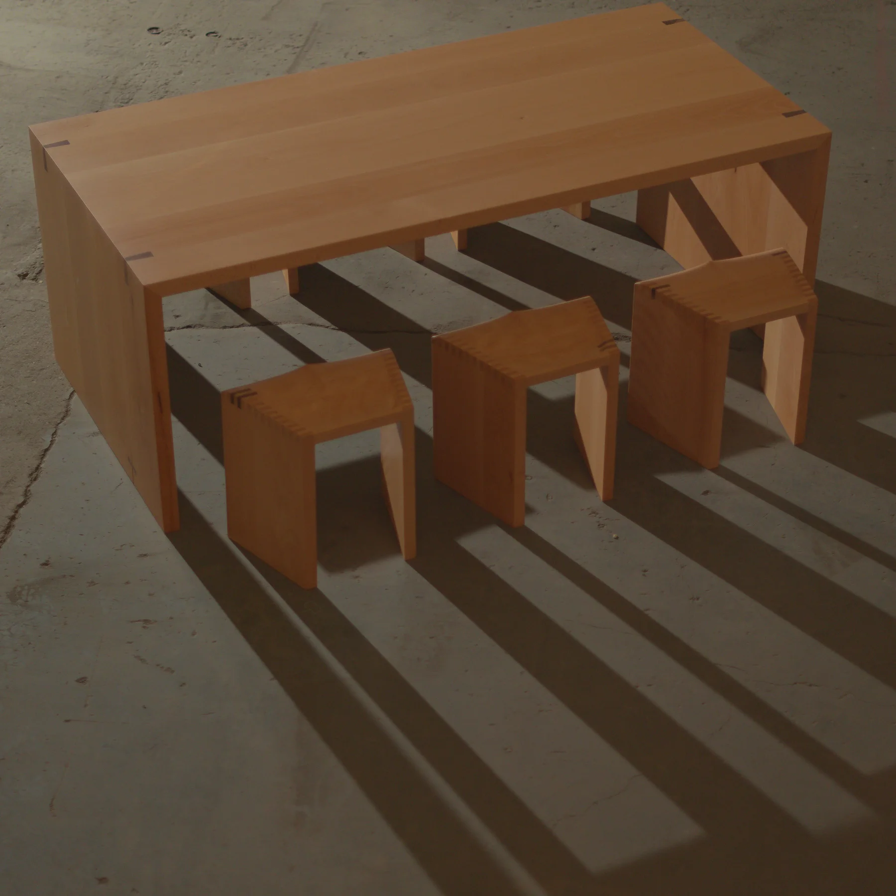
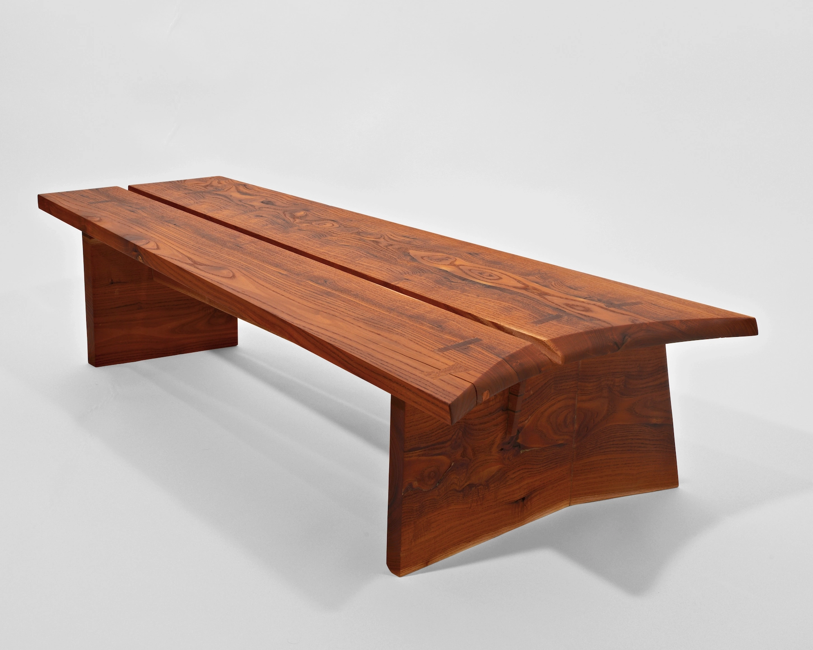

About the Maker

Lucas Fritz Weyand is a furniture craftsman and co-owner of Studio Fritz.
Born in Pittsburgh, PA and raised on Bainbridge Island, WA, Lucas drew his early inspirations from both East Coast, Pennsylvania modernism (from Kentuck Knob to Nakashima’s Conoid chair) and West Coast organic design that responds to the rainy climate and tree dense environment.
Raised in a family of architects, spatial designers, furniture makers, and metal sculptors, Lucas developed an eye for tasteful, enduring design that informs his modern perspective on the built environment.
Lucas introduces these various crafts into his work — his style is undoubtedly focused on quality wood materials, but with provocations in materials such as metals, cord under tension, and tinted colour. His designs are researched with strong consideration and respect for architectural and interior design coherence.
The Studio Fritz name is an homage to this family history.
Founded in 2021 by wood craftsman Lucas Fritz Weyand and his wife Eliza, an illustrator, Studio Fritz is an ongoing partnership in design.


About the Studio
Studio Fritz is a contemporary fine furniture maker from Bainbridge Island, WA. The studio experiments primarily with Pennsylvania modernism, West Coast organic design, and brutalism.
Now based out of Seattle’s industrial district, Studio Fritz handcrafts objects with a singular demeanor. That character emerges through an emphasis on form, restraint, and a modest yet distinct presence.
The studio builds exclusively with solid wood and traditional joinery techniques, intentionally rejecting more efficient methods such as nails, screws, or CNC machinery. Techniques are deliberately slow, allowing for adjustment based on wood and structural behaviour as it evolves during the process.
Silhouettes and profiles utilize Bézier curves, creating organic, non-uniform lines. Material (from brushed metals to rattan weaves), tinted colour, and texture are treated as secondary elements, carefully selected to accent the qualities of the form.
Traditional Danish and Japanese joinery techniques and hardwoods ensure timeless design relevance and generational durability.
Founded by craftsman Lucas Fritz Weyand and his wife Eliza, an illustrator, Studio Fritz is an ongoing partnership in design.




